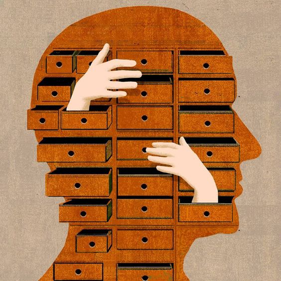

O que é Psicologia?
A psicologia é uma ciência dedicada a estudar os aspectos mentais e comportamentais do ser humano, levando em conta o seu desenvolvimento da infância até a terceira idade, além da influência do ambiente físico e social na vida do indivíduo.
Devido ao fato de estudar os estados mentais e comportamentais da pessoa ser uma grande responsabilidade, é importante saber que existem diversas abordagens teóricas e práticas dentro da Psicologia, onde cada uma possui um olhar diferente para o ser humano, a fim de interpretá-lo e dar sentido no trabalho do psicoterapeuta que, pode se especializar e utiliar alguma dessas teorias em sua profissão.
Dessa forma, a seguir existem algumas introduções em algumas abordagens:
-

Psicanálise
Criada pelo neurologista austríaco Sigmund Freud, a Psicanálise é um método terapêutico dedicado a estudar o inconsciente mental.
Através do método interpretativo o psicanalista ou psicólogo trabalham para interpretar e dar sentido aos conteúdos inconscientes existentes em palavras, ações e produções imaginárias de um indivíduo, tendo por base a associação livre e transferência. -
Terapia Cognitiva-Comportamental (TCC)
Criada pelo neurologista e psiquiatra Aaron Beck, a TCC é uma abordagem mais clara e direta, que entende como o ser humano interpreta os acontecimentos ao seu redor que o afeta de forma positiva ou negativa, e como o indivíduo lida com essas questões. Ou seja, é focada na forma particular de como uma pessoa vê, sente e pensa em relação a uma situação que lhe causa sofrimento.
Dessa forma, a TCC tem por principal objetivo ajudar o paciente, lhe proporcionando recursos e ferramentas para que este possa lidar com seus pensamentos, crenças e comportamentos desagradáveis. -

Psicologia Humanista
Desenvolvida pelos teóricos Abraham Maslow e Carl Rogres, a psicologia humanista enfatiza conceitos como o livre-arbítrio e a auto-realização, se apoiando na crença de que os seres humanos são únicos e devem ser muito bem tratados.
Além disso, a psicologia humanista trabalha em conjunto com o paciente, afim de ajudar as pessoas a se apropriarem de suas histórias de vida, se responsabilizando pelos seus atos, na busca da realização de seus potenciais e no alcance daquilo que faz sentido para suas próprias vidas, prezando assim, pelo desenvolvimento pessoal de cada indivíduo.
-
Psicanálise
Criada pelo neurologista austriaco Sigmund Freud, a Psicanálise é um método terapêutido dedicado a estudar o inconsciente mental.
Através do método interpretativo o psicanalista ou psicólogo trabalham para interpretar e dar sentido aos conteúdos inconscientes em palavras, ações e produções imaginárias de um indivíduo, tendo por base a associação livre e transferência. -
Terapia Cognitiva-Comportamental (TCC)
Criada pelo neurologista e psiquiatra Aaron Beck, a TCC é uma abordagem mais clara e direta, que entende como o ser humano interpreta os acontecimentos ao seu redor que o afeta de forma positiva ou negativa, e como o indivíduo lida com essas questões. Ou seja, é focada na forma particular de como uma pessoa vê, sente e pensa em relação a uma situação que lhe causa sofrimento.
Dessa forma, a TCC ter por principal objetivo ajudar o paciente, lhe proporcionando recursos e ferramentas para que este possa lidar com seus pensamentos, crenças e comportamentos desagradáveis. -
Psicologia Humanista
Desenvolvida pelos teóricos Abraham Maslow e Carl Rogres, a psicologia humanista enfatiza conceitos como o livre-arbítrio e a auto-realização, se apoiando na crença de que os seres humanos são únicos e devem ser muito bem tratados.
Além disso, a psicologia humanista trabalha em conjunto com o paciente, afim de ajudar as pessoas a se apropriarem de suas histórias de vida, se responsabilizando pelos seus atos, na busca da realização de seus potenciais e no alcance daquilo que faz sentido para suas próprias vidas, prezando assim, pelo desenvolvimento pessoal de cada indivíduo.